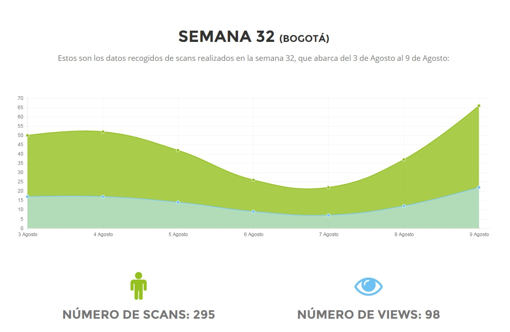
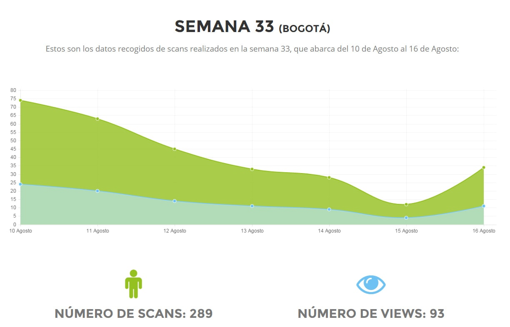

Toggle navigation
CEE APP
Resumen Scans
Resumen Views
Descargas
Reportes
Historico
Ciudades
Reporte scans - semana 04
JC Decaux
(Nacional)
Comenzar
Resumen Scans
23.594
Total Semana
3.371
Promedio Diario
89.192
Total 2017
Resumen Views
23.594
Total Semana
3.371
Promedio Diario
89.192
Total 2017
DESCARGAS DE LA APLICACIÓN EN COLOMBIA
43.810
Android
41.553
IOS
2.533
Windows
87.896
Total
EVOLUCIÓN SEMANAL DE SCANS Y VIEWS
(Nacional)
INFORMACIÓN GENERAL
(Nacional)
En la gráfica se muestran todos los scans realizados en la última semana:
Género
Edad
Edad
HISTÓRICO
(Nacional)
El histórico incluye los datos registrados en semanas anteriores para esta campaña:
SEMANA
35
SEMANA
34
SEMANA
33
SEMANA
32
SEMANA
31
SEMANA
30
CONOCE
LOS REPORTES
DE CADA CIUDAD
BOGOTÁ
-
CALI

Cerrar

Cerrar
Cerrar
Cerrar